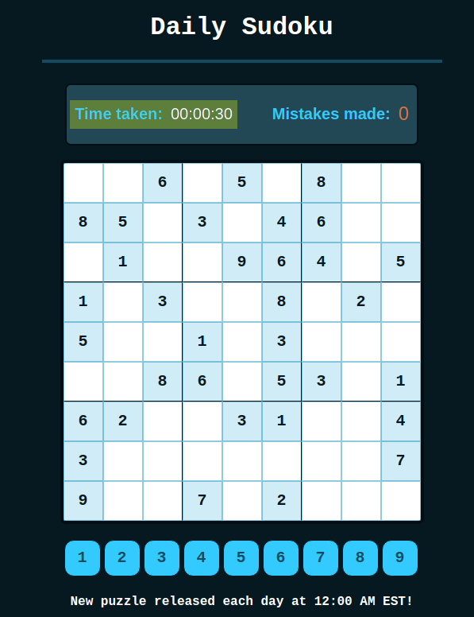
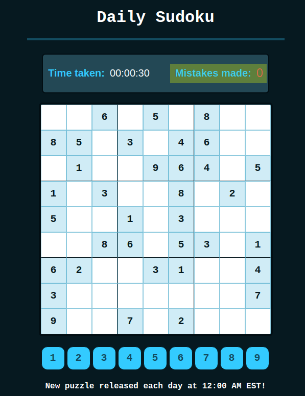
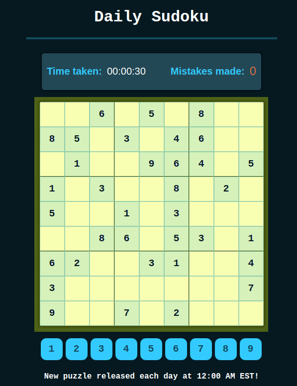
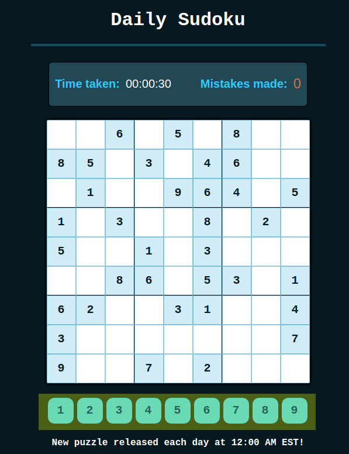
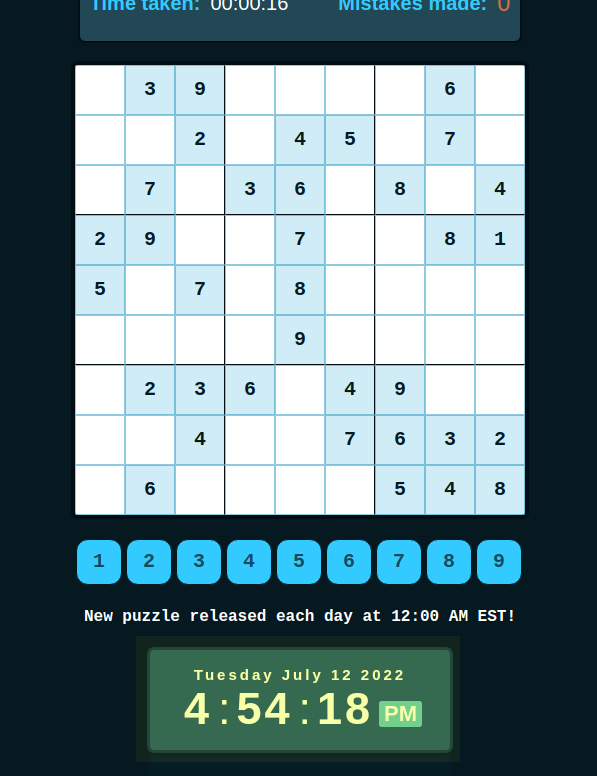
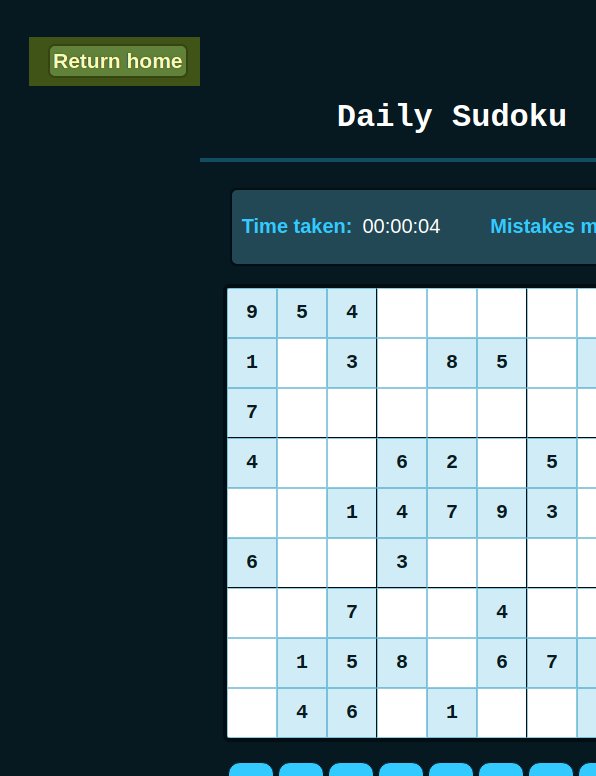

How to Play
General Rules
- Click the "Play Sudoku" link
- Once the game loads, there is no going back as the timer has started (if the browser is closed, you return to the home page, etc., the timer will still continue). Therefore, make sure you click the "Play Sudoku" button when you are ready to start
- The timer is located above the puzzle to the left
- The error counter is located above the puzzle on the right
- The timer will continue until either:
- The puzzle is completed.
- You pass the mistake threshold.
- The clock passes 11:59 PM EST.
- The mistake threshold is 3. On the third mistake, you will recieve a DNF (did not finish) and will no longer be able to complete the daily sudoku puzzle
- Upon completion, you will recieve a score based on the time taken, as well as the number of mistakes made. Higher scores are rewarded to users who complete the puzzle in a shorter amount of time and with less mistakes
- If you are unable to complete the puzzle by 11:59 PM EST, you will recieve a DNF and a score of 0
- New puzzles are released each day at 12:00 AM EST (clock in EST is located on the home page, as well as below the Sudoku puzzle)
Game Rules
When you arrive at the Sudoku page it is important to take note of the different regions of the game
- THE TIMER

- THE MISTAKE COUNTER

- THE SUDOKU BOARD

- THE NUMBERS BELOW THE BOARD

- THE CLOCK (in EST)

- THE RETURN HOME BUTTON

If you have never played sudoku before, here are the basic rules of the game:
- Rule 1: Every row must contain the numbers 1 to 9, without duplicates
- Rule 2: Every column must contain the numbers 1 to 9, without duplicates
- Rule 3: Each of the 3 x 3 blocks found on the 9 x 9 board (making a total of nine 3 x 3 blocks) must contain the numbers 1 to 9, without duplicates
- Rule 4: Guessing is NOT required when solving the puzzle (sudoku is a logical number puzzle). However, you are free to guess, at the expense of recieving a mistake. Do so cautiously!
- Rule 5: Each puzzle only has ONE unique solution.
In order to place a number on the board you must:
- Click on the number (1 to 9) located below the board that you would like to place onto the board
- Now that you have a number selected, choose where on the board you want that number to go, and click
- If the number you placed is in the right position, it will be added to the board. If it is incorrect, it will not be added to the board and you will recieve a mistake
- If you would like to place a different number on the board, repeat the last two steps
It is very important that you follow these steps correctly in order to avoid recieving accidental mistakes
For example, if you were to click where on the board, and then choose the number you want to place there, you may end up recieving a mistake, since a different number might already be selected